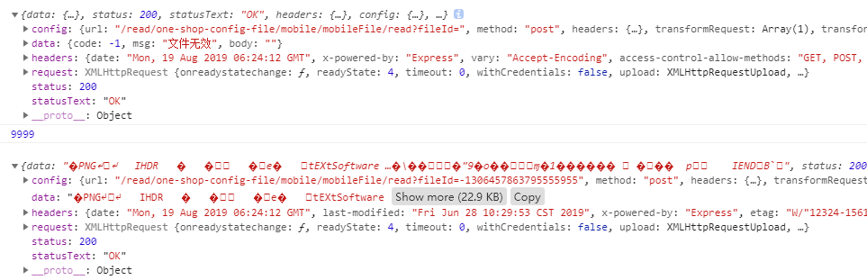

问题：由于业务需要，我们需要判断图片能否正常的加载，如果未正常加载的话，需要显示一张默认图片；
方案：1，由于后台返回的是一个图片id数组，例如 imgList=['343313131','21333413244','3312w232211'],图片的完整路径应为http://公司服务器地址/xxxx/read?fileId='图片id'，可以看成一个请求，先对图片的src请求一次，如果请求成功，返回的结果（res）data里面应该是一串二进制乱码，如果返回的结果中data属性里面有code，值不为0，则说明图片是无效的。
2，onerror事件此时传入当前的元素并修改src
实施方案： 第一种方案
/*图片检验2*/
//that为传入的img数组
//name为属性名字例如[{id:'343313131'}],此时name就为'id';
//apiBaseUrl 为域名
//fileConfigServer 为读取路径
//imgSrcPath 为参数名例如 '?fileId='
import axios from 'axios';
Vue.prototype.testImg2 = function(that, name) {
function* change() {
for(let j=0;j<that.length;j++){
let result = yield ajax(j);
}
let result = yield ajax();
}
var newchange = change();
function ajax(i){
axios({
method: 'post',
url: apiBaseUrl + fileConfigServer + imgSrcPath + that[i][name]
}).then(res => {
that[i][name] = res.data.code ? false : apiBaseUrl + fileConfigServer + imgSrcPath + that[i][name];//（1）
console.log(res); //打印结果
newchange.next();
}).catch(err => {
console.log('失败')
})
}
newchange.next();
}结果：打印res如下:

第一个为显示不正常的，data中返回了data相关字段code为-1，第二个为显示正常的data的值为二进制代码
（1）中即为如果返回有code 则将图片的id值记为false，vue界面可采用 v-if来显示正常图片与加载失败的图片
问：这里为什么采用yiled？
答：因为是异步请求，无法判定第几个先返回，但为了保证之前的顺序，所以在请求完成的时候调用next进行下一次请求，也可以采用
方案二，方案二是比较简单的
直接给图片绑定error事件即可，例如://html中
<img @error="handleError($event)"/>
//methods中：
handleError(e){
e.currentTarget.src="默认图片地址"
}方案二注意：1，如果图片是循环出来的用这种方案是没有问题的，注意火狐可能不兼容onerror事件，可以采用背景图片代替
2，如果图片单独的不是循环出来的，比如封面之类的，加入logo来自于后台 ，即src是动态的建议如下：
//html中
<img v-if="imgurl" :src="imgurl"/>
//js中 请将imgurl初始值赋值为null
这样做的原因：html会优先解析img元素会被创建，而此时imgurl还在请求中值不存在，此时就会触发onerror事件，如果加v-if，html不会解析img标签，当然元素不会创建。